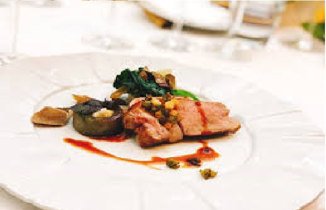

法國烹飪方法
法國烹飪重視烹飪方法和就餐禮儀，法國盛產葡萄酒（法語：vin）和起司（法語：fromage），
成為法國烹飪必不可少的調味料，法國各地大約出產450多種不同風味的起司，每一種起司以最先發明其做法的村鎮名命名，
有的村鎮如Camembert在任何普通地圖中都找不到，但在任何一本法語詞典甚至英語詞典中，都能找到這個代表起司名稱的詞。
法國烹飪在各地區根據其特產，也具有不同特色，南方沿海多使用橄欖油，南方、西方沿海多水產，北方、東方則多肉食。
整體來說，法國人不太喜歡素食。

連到首頁
連到第2頁
連到第4頁
連到第5頁